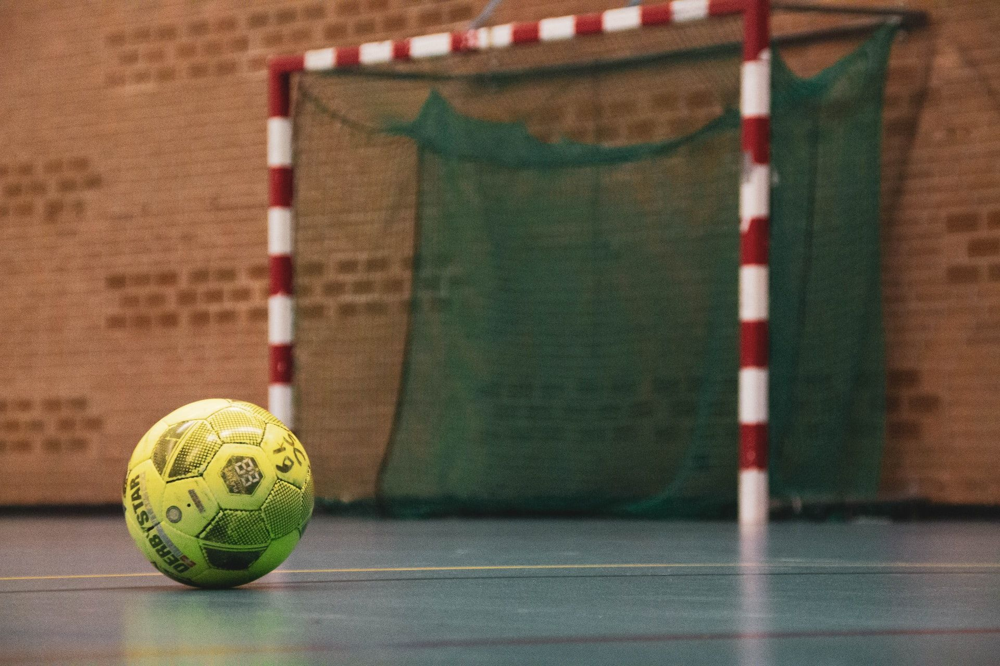

Hobby
Futsal adalah permainan bola yang dimainkan oleh dua tim, yang masing-masing beranggotakan lima orang. Tujuannya adalah memasukkan bola ke gawang lawan, dengan memanipulasi bola dengan kaki. Selain lima pemain utama, setiap regu juga diizinkan memiliki pemain cadangan. Tidak seperti permainan sepak bola dalam ruangan lainnya, lapangan futsal dibatasi garis, bukan net atau papan.
Hal yang harus diperhatikan saat bermain futsal

Mobile Legends adalah permainan MOBA yang dirancang untuk ponsel. Kedua tim masing-masing berisi 5 orang berjuang untuk mencapai dan menghancurkan markas musuh sambil mempertahankan markas mereka sendiri untuk mengendalikan tiga jalur, yang dikenal sebagai jalur "atas", "tengah" dan "bawah", yang menghubung ke setiap markas.
Di masing-masing tim, ada lima pemain yang mengendalikan avatar sendiri-sendiri, yang dikenal sebagai "hero", dari perangkat mereka sendiri. Karakter lemah yang dikendalikan komputer disebut "minion", yang bersarang di markas tim lalu menyebar ke tiga jalur dan melawan menara serta lawan yang menghadang. Mengumpulkan EXP berguna untuk menaikkan level hero saat permainan berlangsung.